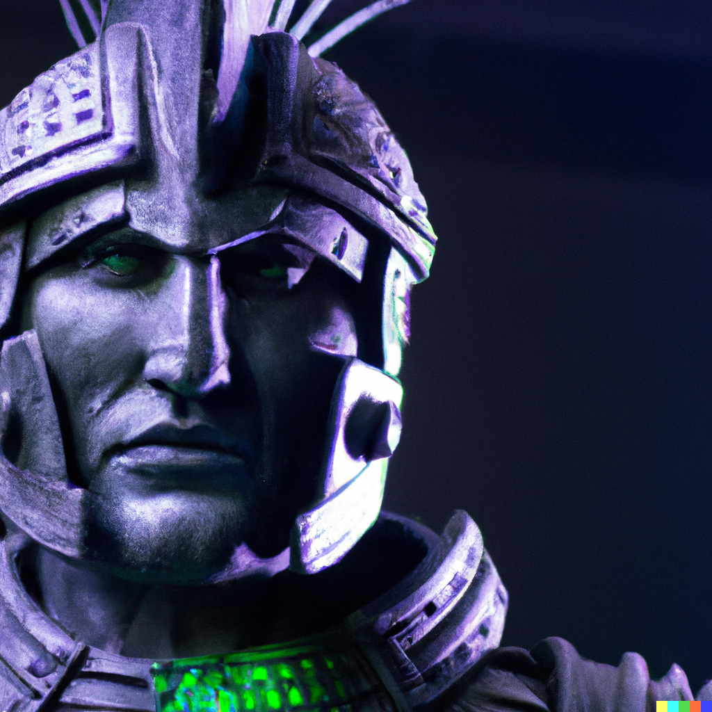

Thank you for choosing us!
Welcome to our chess website! We're a group of chess enthusiasts who have come together to create a space
for players of all skill levels to learn, play, and improve their game.
Our website features a variety of resources for chess players,
including articles on strategy and tactics,
and a platform for playing games.
We believe that chess is more than just a game -
it's a valuable tool for developing critical thinking and problem-solving skills.
Our goal is to create a community of players who can support each other and continue to improve their game together.
Whether you're just starting to learn the game,
or you're a seasoned veteran looking to take your game to the next level,
we're here to help. Thanks for visiting our website,
and we hope to see you on the virtual chessboard soon!
Feel free to reach out to us with any questions or feedback.
Our team is always ready to support and help you.
Thank you for choosing us.
Our members:
Jake Arrows
Nancy Bakers